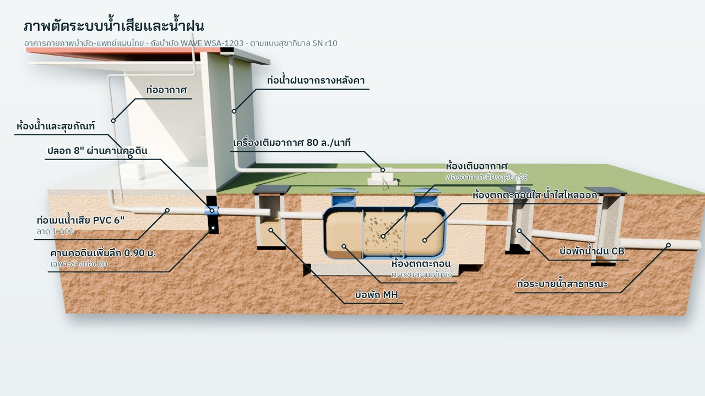

Sanitary · Treatment · Rainwater
น้ำเสีย การบำบัด และน้ำฝน
น้ำจากสุขภัณฑ์ไหลด้วยแรงโน้มถ่วงลงท่อเมน 6 นิ้วใต้พื้น ผ่านบ่อพักเข้าถังบำบัดแบบเติมอากาศ น้ำที่บำบัดแล้วออกสู่บ่อพักรอบอาคารรวมกับน้ำฝน แล้วไหลไปท่อระบายน้ำสาธารณะ น้ำฝนจากหลังคาไม่ผ่านถังบำบัด

ถังบำบัดน้ำเสียแบบเติมอากาศทำงานอย่างไร
- ห้องตกตะกอนและย่อยไร้อากาศ ของแข็งตกลงก้นถัง จุลินทรีย์ที่ไม่ใช้ออกซิเจนย่อยสลายเป็นก๊าซและน้ำ ไขมันลอยตัวค้างอยู่ด้านบน
- ห้องเติมอากาศ เครื่องเติมอากาศบนดินอัดลมลงหัวกระจายฟองที่ก้นถัง จุลินทรีย์ที่ใช้ออกซิเจนย่อยสารอินทรีย์ที่ละลายน้ำ ฟองอากาศช่วยกวนให้น้ำผสมทั่วห้อง
- ห้องตกตะกอนใส ตะกอนจุลินทรีย์ตกลงก้นห้อง น้ำใสส่วนบนไหลล้นออกจากถังไปบ่อพัก
- สูบตะกอน ตะกอนสะสมที่ก้นถังต้องให้รถสูบตามรอบบำรุงรักษา ตอนถังว่างระหว่างสูบ แผ่นฐานคอนกรีตและดินที่ถมทับกันถังลอยขึ้นจากน้ำใต้ดิน
ตัวเลขออกแบบ
| รายการ | กายภาพบำบัด-แพทย์แผนไทย | วารีบำบัด |
|---|---|---|
| น้ำเสียต่อวัน (80% ของน้ำใช้) | 3,520 ล. | 3,640 ล. |
| ถังบำบัดเติมอากาศ | WAVE WSA-1203 3,000 ล. × 2 | WAVE WSA-1405 5,000 ล. × 1 |
| เวลาเก็บกักน้ำในถัง | 1.64 · 1.78 วัน | 1.37 วัน |
| เครื่องเติมอากาศ | NITTO LA-80B 80 ล./นาที 86 W | NITTO LA-100A 100 ล./นาที 100 W |
| ถังดักไขมัน | ไม่มีครัว | WGT-400 รับอ่างคาเฟ่ |
| ท่อเมนน้ำเสีย | PVC 8.5 ขนาด 6" ลาด 1:100 | PVC 8.5 ขนาด 6" ลาด 1:100 |
| ปลอกท่อผ่านคานคอดิน | ปลอก 8" คานคอดินเพิ่มลึกเป็น 0.90 ม. ยาว 1.00 ม. เฉพาะจุดที่ท่อผ่าน | |
| พื้นที่หลังคารับน้ำฝน | 800 ตร.ม. | 1,064 ตร.ม. |
| ฝนออกแบบ · สัมประสิทธิ์การไหลหลังคาเหล็ก | 150 มม./ชม. · 0.95 | |
| ท่อระบายรอบอาคาร | 6" ลาด 1:200 บ่อพัก CB ทุกจุดรับท่อน้ำฝน | |